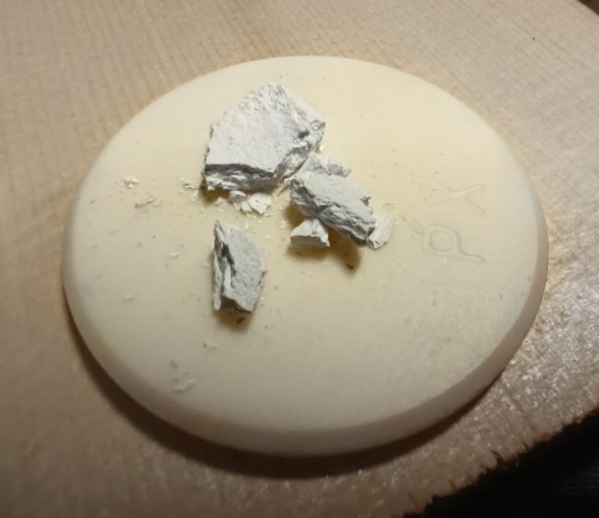

August 10, 2026
Bridging two Alchemies - Part Two
I think a good part of the answer is visual, and it goes by a name: optical depth.
Transparency, Color and Illumination
Before any ground or filler ever touches the wood, something usually happens to the wood itself. Many makers today begin by treating the wood's surface chemically, well before a single layer of anything is applied on top — something the old masters likely did too, to some degree, though almost certainly not to the extent we do now, since they weren't trying to imitate an "old" instrument the way many of us are today. Nitrite salts, potassium or sodium, combined with UV exposure, are a common approach. Others pair a similar nitrite treatment with an acid — something mild like acetic or citric, or something considerably stronger like hydrochloric or nitric. Ozone is another route some makers use, along with ammonia, which among other effects can open or enlarge the wood's pores — something I'll come back to shortly, when we get to illumination. Beyond these, there are more exotic paths still in use, such as juglone or smoke. Different makers reach for different combinations, for different reasons, but the underlying goal tends to be the same — preparing the wood itself, before anything is added on top of it, so that transparency and depth become a property of the wood's own surface, not only of the varnish sitting above it.
Look closely at a great old Cremonese varnish and you notice it doesn't sit flatly on the surface. It seems to hold light rather than just reflect it — as if you're looking somewhat into the wood itself, not just at it. That sensation is not accidental, and it isn't mysticism either. It comes down to a number of physical principles: how light bends when it moves between materials, and how it scatters depending on the size of the particles it encounters.
When light passes from one material into another — from air to varnish, into a ground layer, or from a ground layer into wood — it bends slightly. How much it bends depends on each material's refractive index (RI). When the materials in a varnish system are close to one another in refractive index, light passes through cleanly, and the eye reads that as clarity and depth. When they're mismatched, light scatters at each boundary, and no amount of polish will make the result look truly transparent and deep.
Particle size adds another layer to this. The ground itself is, in
essence, a fine powder combined with the varnish — and the size of
those particles changes how light behaves within it. Pigments work
the same way: small particles that, when their refractive index is
close to or matches the surrounding material, don't cloud the
varnish but instead filter out certain frequencies of light, which
is what gives color its character rather than simply a haze. In
tandem with refractive index, it's the sub-micron particles — well
below the wavelength of visible light — that give old varnish its
warm, glowing quality, scattering color selectively rather than
uniformly. Larger particles, by contrast, scatter light more evenly
across all wavelengths, which reads instead as a milky or hazy cast.
Different makers, past and present, have approached this from
different directions. Some work by careful layering of oils and
resins alone. Others have looked to mineral grounds — I first came
across this path some twenty years ago, through Roger Hargrave and
his work with a dead plaster filler. From there, I began asking a
simpler question: rather than looking for one specific lost
ingredient, what if the old masters were, above all, practical? They
likely used what was available near their workshops, not necessarily
anything rare or imported — chosen for what it did, not for where it
came from.
There's a third effect worth mentioning here, one that's harder to put into words: illumination. Picture how a fiber-optic cable carries light along its length rather than losing it — something similar may happen inside wood itself. If mineral particles crystallize within the wood's own pores, and are then bound into the varnish above them, they may help carry light further into the wood than the varnish alone ever could, illuminating it from the inside rather than only reflecting off the surface. Wood with larger pores would let more light travel in this way than wood with finer pores — not unlike a room with large windows appearing brighter than one with small windows, even under the same amount of daylight. Pore size itself isn't necessarily fixed by nature alone; it's something a maker's approach to preparing the wood can influence, for better or worse.
What I want to say instead is simpler: transparency and color aren't something added on top of an instrument. They're built into it, from the wood outward.
